手雷
| 名字 | 图标 | 起手 | 后续 | 100 属性 | 200 属性 | 排行 |
|---|---|---|---|---|---|---|
| 烈日手雷 平均伤害、骨灰余烬、火焰之触、炎阳护腕 | 184 | 147 伤害、293 团块、1592 点燃 | 3893 | 6133 | 1 | |
| 磁性手雷 平均伤害、混沌加速、包括不稳定伤害 | 895 | 216/1 不稳定 | 3900 | 5823 | 2 | |
| 风暴手雷 平均伤害、量级火花、暴雷之触 | 1171 | 413 跳伤 | 3203 | 5436 | 3 | |
| 虚空墙壁 残存回声 | 257 | 440 次要、8 伤害 | 3208 | 5281 | 4 | |
| 散射手雷 平均伤害、混沌加速 | 404 | 242/17 次要 | 2409 | 3985 | 5 | |
| 烈日手雷 平均伤害、骨灰余烬、火焰之触 | 184 | 147 伤害、293 团块、1592 点燃 | 2436 | 3961 | 6 | |
| 碎裂手雷 平均伤害、裂隙之吟 | 510 | 829/1528 次要、20 伤害 | 2697 | 3902 | 7 | |
| 脉冲手雷 平均伤害、量级火花、暴雷之触 | 358 | 8 伤害、715 上限 | 2215 | 3653 | 8 | |
| 铝热手雷 平均伤害、骨灰余烬、包括点燃 | 579 | 变动 次要、8 伤害、1592 点燃 | 2172 | 3448 | 9 | |
| 冰火尖刺 勇气琢面、毁灭琢面 | 130 | 6 伤害、33 跳伤、829 碎裂、1553 点燃 | 2177 | 3339 | 10 | |
| 涡流手雷 残存回声、混沌加速 （最后的持续伤害伤害似乎是随机的） | 414 | 166 跳伤、9 伤害、145 终结 | 1980 | 3269 | 11 | |
| 脉冲手雷 量级火花 | 366 | 586 脉冲、8 伤害 | 1946 | 3211 | 12 | |
| 闪电手雷 量级火花、附着到地面（直接附着到战斗人员身上没有任何作用） | 879 | 15 伤害 | 1911 | 3152 | 13 | |
| 融合手雷 平均伤害、骨灰余烬、火焰之触、包括点燃 | 1738 | 1631 次要、14 伤害、1592 点燃 2259/2120 黏附冲击 | 1842 | 3038 | 14 | |
| 粘性电浆手雷 黏附冲击 | 4087 | 15 伤害 | 1783 | 2943 | 15 | |
| 虚空尖刺手雷 残存回声 | 206 | 15 伤害 | 1708 | 2811 | 16 | |
| 涡流手雷 残存回声 | 414 | 166 跳伤、9 伤害、115 终结 | 1605 | 2607 | 17 | |
| 量子光束 混沌加速 | 1764 | 15 次要、15 伤害 | 1560 | 2572 | 18 | |
| 闪电手雷 | 879 | 15 伤害 | 1535 | 2533 | 19 | |
| 燃烧手雷 平均伤害、骨灰余烬、包括点燃 | 2525 | 15 伤害、1592 点燃 | 1499 | 2475 | 20 | |
| 冰川手雷 平均伤害、裂隙之吟、冬日之触 | 363 | 52 裂隙 | 1444 | 2374 | 21 | |
| 脉冲手雷 | 366 | 586 脉冲、8 伤害 | 1437 | 2370 | 22 | |
| 感应手雷 平均伤害、骨灰余烬、神龙利齿、包括点燃 | 2203 | 23 伤害、1553 点燃 | 1333 | 2192 | 23 | |
| 烈日手雷 骨灰余烬 | 184 | 147 伤害 | 1267 | 2092 | 24 | |
| 风暴手雷 平均伤害、量级火花 | 1200 | 847 次要 | 1258 | 2075 | 25 | |
| 电化陷阱 勇气琢面 | 218 | 7 伤害、1709 次要 | 1249 | 2048 | 26 | |
| 感应手雷 平均伤害、骨灰余烬、包括点燃 | 1975 | 29 伤害、1592 点燃 | 1242 | 2045 | 27 | |
| 线虫手雷 进化丝线 | 881 | 3/17 伤害 | 1150 | 1897 | 28 | |
| 融合手雷 平均伤害、骨灰余烬、包括点燃 | 1738 | 14 伤害、1592 点燃 2259 黏附冲击 | 1129 | 1862 | 29 | |
| 切线手雷 | 399 | 688/499/599 次要、3 伤害 | 1125 | 1856 | 30 | |
| 涡流手雷 | 414 | 166 跳伤、9 伤害 | 1122 | 1853 | 31 | |
| 冰冻奇点 勇气琢面、毁灭琢面 | 829 | 37 跳伤、147/8 伤害、1208 终结 | 1251 | 1803 | 32 | |
| 冰川手雷 平均伤害、裂隙之吟 | 372 | 52 裂隙 | 1282 | 1793 | 33 | |
| 抑制手雷 | 2328 | 15 伤害 | 1019 | 1680 | 34 | |
| 磁性手雷 平均伤害 | 1154 | 1673 黏附冲击、16 伤害 | 1010 | 1667 | 35 | |
| 蜂群手雷 平均伤害、骨灰余烬、包括点燃 | 135 | 126 次要、17 伤害、1592 点燃 | 1054 | 1611 | 36 | |
| 散射手雷 平均伤害 | 275 | 165/17 次要 | 950 | 1567 | 37 | |
| 蜂群手雷 平均伤害、包括点燃 | 135 | 126 次要、17 伤害、1592 点燃 | 914 | 1511 | 38 | |
| 风暴手雷 | 1200 | 847 次要 | 890 | 1468 | 39 | |
| 线虫手雷 | 662 | 3/17 伤害 | 865 | 1427 | 40 | |
| 闪光手雷 | 1863 | 15 伤害 | 817 | 1347 | 41 | |
| 量子光束 | 1411 | 15 次要、15 伤害 | 627 | 1033 | 42 | |
| 电光手雷 | 1421 | 15 伤害 | 624 | 1030 | 43 | |
| 烈焰手雷 平均伤害、骨灰余烬、包括点燃 | 916 | 15 伤害、1592 点燃 | 609 | 1007 | 44 | |
| 束缚手雷 | 446 | 637 次要、7 伤害 | 474 | 782 | 45 | |
| 弹跳手雷 | 211 | 57 次要、15 伤害 | 473 | 777 | 46 |
近战
| 名字 | 图标 | 起手 | 后续 | 100 属性 | 200 属性 | 排行 |
|---|---|---|---|---|---|---|
| 风暴怒吼 平均伤害、裂隙之吟、生物强化 | 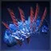 | 662 | 1512 碎裂、52 裂隙 | 6373 | 6100 | 1 |
| 战锤打击 骨灰余烬 | 2019 | 1346 次要 | 1604 | 2046 | 2 | |
| 风暴怒吼 平均伤害、裂隙之吟 | 363 | 829 碎裂、52 裂隙 | 1948 | 1936 | 3 | |
| 地震打击 | 2467 | 898 次要 | 1463 | 1902 | 4 | |
| 圣盾强袭 | 2467 | 898 次要 | 1463 | 1902 | 5 | |
| 雷霆一击 完全充能 | 3230 | — | 1404 | 1826 | 6 | |
| 神圣献祭 生物强化 | 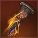 | 153 | 1553 点燃、1786 波形 | 1528 | 1781 | 7 |
| 投掷飞锤 锻造大师、完美回收、近战距离 | 1157 | 623/596 次要 | 1283 | 1667 | 8 | |
| 灵魂虹吸 | 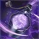 | 2021 | 25 起手 | 1333 | 1620 | 9 |
| 基础 亡灵之握 | 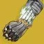 | 207 | 299 终结 | 1454 | 1483 | 10 |
| 闪电激涌 | 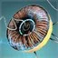 | 1458 | 228/292/584 次要 | 1114 | 1417 | 11 |
| 迷失一击 | 2243 | 207 次要 | 1065 | 1385 | 12 | |
| 神圣献祭 | 84 | 1553 点燃、979 波形 | 1147 | 1296 | 13 | |
| 焚烧响指 骨灰余烬 | 206 | 1553 点燃 | 1144 | 1270 | 14 | |
| 飞刀戏法 平均伤害、精密、骨灰余烬、包括点燃 | 513 | 394 躯干、1553 点燃 | 1125 | 1245 | 15 | |
| 蒙特卡洛 刺刀上膛 | 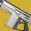 | 1739 | — | 756 | 983 | 16 |
| 线织尖刺 来回伤害 | 818 | 817 回程 | 711 | 924 | 17 | |
| 雷霆一击 未充能 | 1615 | — | 702 | 913 | 18 | |
| 抓钩 | 895 | — | 778 | 895 | 19 | |
| 镖弹风暴 包括发射伤害 | 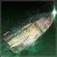 | 244 | 308/6 抽击 | 652 | 849 | 20 |
| 星界之火 平均伤害、骨灰余烬、包括点燃 | 389 | 1553 点燃 | 763 | 838 | 21 | |
| 寒冬之啮 平均伤害、2 轻 1 重 | 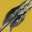 | 329 | 587 重击、829 碎裂 | 661 | 790 | 22 |
| 鬼灵激涌 | 1367 | 2050 虚空-受减益 | 594 | 773 | 23 | |
| 裂空打击 包括震颤 | 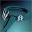 | 1144 | 228 震颤 | 597 | 746 | 24 |
| 权衡飞刀 精密 | 1313 | 876 躯干 | 571 | 742 | 25 | |
| 投掷飞锤 | 1297 | 1577 上限 射程 | 564 | 733 | 26 | |
| 感应爆炸飞刀 精密 | 610 | 622 爆炸、469 躯干 | 536 | 696 | 27 | |
| 维王者之剑 2 轻 1 重、永恒漏洞 | 314 | 559 重击 | 516 | 670 | 28 | |
| 狂暴利刃 | 1178 | — | 512 | 666 | 29 | |
| 神秘织针 | 1273 | — | 453 | 590 | 30 | |
| 半影冲击 平均伤害、毁灭琢面 | 383 | 829 碎裂 | 538 | 588 | 31 | |
| 枯萎之刃 平均伤害、毁灭琢面 | 681 | 829 碎裂、52 裂隙 | 488 | 577 | 32 | |
| 战栗打击 裂隙之吟、包括碎裂伤害 | 435 | 187 次要、829 碎裂、52 裂隙 | 481 | 560 | 33 | |
| 适配框架 偃月 2 轻 1 重 | 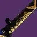 | 261 | 466 重击 | 430 | 559 | 34 |
| 口袋奇点 | 979 | — | 426 | 553 | 35 | |
| 轻质飞刀 精密 | 938 | 626 躯干 | 408 | 530 | 36 | |
| 弹道猛击 平均伤害、最大弹射跃升高度 | 833 | — | 362 | 472 | 37 | |
| 圣盾投掷 | 540 | — | 235 | 305 | 38 | |
| 陷阱炸弹 包括 15% 易伤 | 221 | 55 伤害、42 上限 | 232 | 301 | 39 | |
| 球形闪电 | 319 | 168 伤害 | 199 | 258 | 40 | |
| 基础 泰坦 | 456 | — | 198 | 258 | 41 | |
| 基础 术士 | 207 | — | 90 | 117 | 42 |
超能
| 名字 | 图标 | 起手 | 后续 | 100 属性 | 200 属性 | 排行 |
|---|---|---|---|---|---|---|
| 烈焰之歌 督军狂怒、雪上加霜、星界之火、骨灰余烬、护盾粉碎 | — | — | 110884 | 141851 | 1 | |
| 烈焰之歌 督军狂怒、雪上加霜、星界之火、骨灰余烬 | — | — | 108025 | 131574 | 2 | |
| 冰川震击 重击、光能盛宴 x6、迎接风暴 | — | — | 81892 | 121981 | 3 | |
| 烈焰之歌 督军印记 x10、圣人之拳、星界之火、骨灰余烬 | — | — | 98929 | 116545 | 4 | |
| 烈焰之歌 督军狂怒、圣人之拳、星界之火、骨灰余烬 | — | — | 93391 | 115858 | 5 | |
| 烈焰之歌 督军狂怒、星界之火、骨灰余烬 | — | — | 88121 | 113287 | 6 | |
| 冰川震击 重击、光能盛宴 x6 | — | — | 64095 | 98811 | 7 | |
| 冰川震击 重击、生物强化 | — | — | 62925 | 87095 | 8 | |
| 烈焰之歌 黎明副歌、圣人之拳、星界之火、骨灰余烬 | — | — | 62480 | 76598 | 9 | |
| 燃烧锻锤 轻击、咆哮烈焰 x3、无敌索尔、骨灰余烬、日焰熔炉 x10 | — | — | 48027 | 68729 | 10 | |
| 烈焰之歌 黎明副歌、一直响指、护盾粉碎 | — | — | 38319 | 59650 | 11 | |
| 燃烧锻锤 重击、咆哮烈焰 x3、无敌索尔、骨灰余烬、日焰熔炉 x10 | — | — | 42834 | 58973 | 12 | |
| 冰川震击 重击 | — | — | 44790 | 58857 | 13 | |
| 烈焰战锤 咆哮烈焰 x3、日焰熔炉 x10、护盾粉碎、骨灰余烬、最大距离 | — | — | 39007 | 57854 | 14 | |
| 烈焰战锤 咆哮烈焰 x3、日焰熔炉 x10、骨灰余烬、最大距离 | — | — | 34359 | 51768 | 15 | |
| 冰川震击 风暴怒吼+重击循环、理论数字 | — | — | 31860 | 49760 | 16 | |
| 混沌之触 地磁安定靴、无敌索尔 | — | — | 32938 | 47243 | 17 | |
| 烈焰战锤 咆哮烈焰 x3、无敌索尔、骨灰余烬、生物强化 | — | — | 30963 | 45566 | 18 | |
| 烈焰战锤 光能盛宴 x6、勇气琢面、护盾粉碎、最大距离 | — | — | 30691 | 43815 | 19 | |
| 电弧法杖 雷电通流、地面 2 轻 1 重 | 1809 | 8273 上限 重击 | 29886 | 43163 | 20 | |
| 燃烧锻锤 轻击、咆哮烈焰 x3、无敌索尔、骨灰余烬、生物强化 | — | — | 29695 | 42070 | 21 | |
| 严冬之怒 轻重击循环、毁灭琢面、光能盛宴 x6 | — | — | 29707 | 41884 | 22 | |
| 烈焰之歌 黎明副歌、一直响指 | — | — | 26748 | 39838 | 23 | |
| 烈焰战锤 光能盛宴 x6、勇气琢面、最大距离 | — | — | 27558 | 39417 | 24 | |
| 雷霆万钧 晋升振幅 | — | — | 27512 | 38593 | 25 | |
| 燃烧锻锤 重击、咆哮烈焰 x3、无敌索尔、骨灰余烬、生物强化 | — | — | 26161 | 38122 | 26 | |
| 利刃弹幕 击败他们、加拉诺碎片 | — | — | 25864 | 33567 | 27 | |
| 混沌之触 地磁安定靴 | — | — | 22498 | 32291 | 28 | |
| 利刃弹幕 击败他们、光能盛宴 x6 | — | — | 22406 | 31996 | 29 | |
| 烈焰战锤 光能盛宴 x6、最大距离 | — | — | 21833 | 31348 | 30 | |
| 烈焰之歌 阿罕卡拉之爪、亡灵之握、一直响指 | — | — | 21264 | 30341 | 31 | |
| 丝线打击 轻击、光能盛宴 x6 | — | — | 20896 | 30293 | 32 | |
| 剑刃之怒 重+轻 x3 重+轻 x4 重+轻 x4 重、战争旗帜、生物强化、持续丝线 | — | — | 20714 | 30030 | 33 | |
| 烈焰之歌 烈焰火苗/响指循环、光能盛宴 x6、亡灵之握 | — | — | 20776 | 29585 | 34 | |
| 鬼灵利刃 轻击、光能盛宴 x6 | — | — | 20401 | 29567 | 35 | |
| 剑刃之怒 重+轻 x3 重+轻 x4 重+轻 x4 重、光能盛宴 x6 | — | — | 20208 | 29473 | 36 | |
| 雷霆万钧 光能盛宴 x6 | — | — | 20561 | 29287 | 37 | |
| 烈焰战锤 咆哮烈焰 x3、无敌索尔、骨灰余烬 | — | — | 19534 | 28462 | 38 | |
| 剑刃之怒 1 重 5 轻、战争旗帜、生物强化、持续丝线 | — | — | 18833 | 27303 | 39 | |
| 严冬之怒 轻重击循环、裂隙之吟、巴利道斯织怒工 | — | — | 23305 | 26518 | 40 | |
| 织针风暴 针术、进化丝线、集群战术 x3 | — | — | 18005 | 25985 | 41 | |
| 黎明 骨灰余烬、黎明副歌、一定距离外 | — | — | 18893 | 25166 | 42 | |
| 新星折跃 | — | — | 16960 | 24505 | 43 | |
| 烈焰之歌 一直响指 | — | — | 16658 | 24157 | 44 | |
| 织针风暴 针术、进化丝线 | — | — | 16412 | 23677 | 45 | |
| 哨兵圣盾 空中轻击、生物强化 | 2201 | 4186 重击 | 16174 | 23450 | 46 | |
| 严冬之怒 轻重击循环、裂隙之吟 | — | — | 19502 | 23278 | 47 | |
| 风暴边缘 光能盛宴 x6 | — | — | 15837 | 23209 | 48 | |
| 燃烧锻锤 咆哮烈焰 x3、无敌索尔、骨灰余烬、火风暴臂铠 | — | — | 16036 | 23176 | 49 | |
| 黄金枪：神枪手 焕光、星界夜鹰 | — | — | 15935 | 23106 | 50 | |
| 雷霆冲击 陨星胸甲 | 29445 | 642 跳伤、249 余震 | 15807 | 22920 | 51 | |
| 黄金枪：神枪手 焕光、光能盛宴 x6 | — | — | 15656 | 22701 | 52 | |
| 雷霆冲击 光能盛宴 x6 | 28495 | 622 跳伤、373 余震 | 15472 | 22431 | 53 | |
| 电弧法杖 光能盛宴 x6、地面 2 轻 1 重 | 1501 | 5125 重击 | 15439 | 22390 | 54 | |
| 黎明 骨灰余烬、黎明副歌 | — | — | 16701 | 22161 | 55 | |
| 织针风暴 光能盛宴 x6、集群战术 x3 | — | — | 15212 | 22069 | 56 | |
| 哨兵圣盾 轻击、生物强化 | 2201 | 2362 次要、4186 重击 | 15216 | 22061 | 57 | |
| 织针风暴 针术 | — | — | 15230 | 21963 | 58 | |
| 浩劫之拳 重击 | — | — | 14792 | 21442 | 59 | |
| 暮光军火 光能盛宴 x6、包括 30% 易伤（模拟续推推 30%） | 6055 | 8477 次要、25 伤害 | 14606 | 21179 | 60 | |
| 新星炸弹：灾变 新星炸弹：长矛 | — | — | 14577 | 21099 | 61 | |
| 烈焰战锤 咆哮烈焰 x3、最大距离 | — | — | 14947 | 20972 | 62 | |
| 烈焰之歌 烈焰火苗/响指循环 | — | — | 14040 | 20364 | 63 | |
| 新星炸弹：灾变 光能盛宴 x6 | — | — | 13932 | 20203 | 64 | |
| 暗影箭矢：莫比乌斯箭袋 满箭袋充能、光能盛宴 x6、包括 30% 易伤 | — | — | 13831 | 19977 | 65 | |
| 烈焰战锤 最大距离 | — | — | 12968 | 19847 | 66 | |
| 沉默狂啸 裂隙之吟、耐久之吟、光能盛宴 x6 | — | — | 15117 | 19670 | 67 | |
| 暗影箭矢：莫比乌斯箭袋 满箭袋充能、奥菲斯钻机、包括 30% 易伤 | — | — | 13540 | 19565 | 68 | |
| 织针风暴 光能盛宴 x6 | — | — | 13394 | 19424 | 69 | |
| 利刃弹幕 击败他们 | — | — | 12795 | 18960 | 70 | |
| 织针风暴 进化丝线、集群战术 x3 | — | — | 12850 | 18627 | 71 | |
| 雷霆万钧 | — | — | 13045 | 18552 | 72 | |
| 黎明 骨灰余烬 | — | — | 12185 | 18169 | 73 | |
| 丝线打击 轻击 | — | — | 12293 | 17824 | 74 | |
| 哨兵圣盾 圣盾投掷、不弹射、满充能 | 27908 | — | 12134 | 17594 | 75 | |
| 鬼灵利刃 轻击 | — | — | 12003 | 17400 | 76 | |
| 燃烧锻锤 重击、无敌索尔、骨灰余烬 | — | — | 12416 | 17160 | 77 | |
| 燃烧锻锤 轻击、无敌索尔、骨灰余烬 | — | — | 12760 | 16928 | 78 | |
| 沉默狂啸 毁灭琢面、光能盛宴 x6 | — | — | 13307 | 16895 | 79 | |
| 风起云涌 光能盛宴 x6 | — | — | 11767 | 16748 | 80 | |
| 暗影箭矢：莫比乌斯箭袋 光能盛宴 x6、包括 30% 易伤 | — | — | 11237 | 16241 | 81 | |
| 织针风暴 进化丝线 | — | — | 11101 | 16098 | 82 | |
| 混沌之触 | — | — | 10905 | 15669 | 83 | |
| 暗影箭矢：莫比乌斯箭袋 奥菲斯钻机、包括 30% 易伤 | — | — | 10616 | 15469 | 84 | |
| 哨兵圣盾 空中轻击、起手 1 轻 1 重 | 1467 | 2791 重击 | 10143 | 14706 | 85 | |
| 哨兵圣盾 轻击 | 1467 | 1575 次要、2791 重击 | 10144 | 14706 | 86 | |
| 雷霆冲击 | 18997 | 415 跳伤、249 余震 | 10136 | 14694 | 87 | |
| 沉默狂啸 裂隙之吟、耐久之吟 | — | — | 11490 | 14515 | 88 | |
| 织针风暴 | — | — | 9920 | 14384 | 89 | |
| 暮光军火 包括 30% 易伤（模拟续推推 30%） | 4037 | 5652 次要、17 伤害 | 9738 | 14119 | 90 | |
| 烈焰战锤 | — | — | 9243 | 13773 | 91 | |
| 风暴边缘 | — | 414/271 精准 | 9414 | 13669 | 92 | |
| 利刃弹幕 | — | — | 9335 | 13526 | 93 | |
| 新星炸弹：灾变 | — | — | 9289 | 13468 | 94 | |
| 黄金枪：神枪手 焕光 | — | — | 9210 | 13354 | 95 | |
| 新星炸弹：涡流 | — | — | 9225 | 13331 | 96 | |
| 电弧法杖 地面 2 轻 1 重 | 883 | 3015 重击 | 9083 | 13173 | 97 | |
| 暗影箭矢：莫比乌斯箭袋 满箭袋充能、包括 30% 易伤 | — | — | 8148 | 11792 | 98 | |
| 沉默狂啸 毁灭琢面 | — | — | 9247 | 11720 | 99 | |
| 风起云涌 雷兽的挽具 | — | — | 8670 | 11603 | 100 | |
| 浩劫之拳 轻击 | 1019 | 2659 重击 | 6838 | 9911 | 101 | |
| 风起云涌 | — | — | 7207 | 9446 | 102 | |
| 暗影箭矢：莫比乌斯箭袋 包括 30% 易伤 | — | — | 6414 | 9413 | 103 | |
| 黄金枪：死亡射击 焕光、骨灰余烬 | — | — | 6287 | 9096 | 104 | |
| 暗影箭矢：狩猎陷阱 包括 35% 易伤 | — | — | 2801 | 4057 | 105 | |
| 冰川震击 轻击、棱镜、毁灭琢面、燃烧之拳 x5 | — | — | 2635 | 2907 | 106 | |
| 冰川震击 轻击、冰影、裂隙之吟、生物强化 | — | — | 1903 | 2586 | 107 | |
| 冰川震击 轻击、棱镜、毁灭琢面、生物强化 | — | — | 1541 | 1919 | 108 | |
| 冰川震击 轻击、冰影、裂隙之吟 | — | — | 1396 | 1852 | 109 | |
| 冰川震击 轻击、棱镜、毁灭琢面、光能盛宴 x6 | — | — | 1678 | 1794 | 110 | |
| 冰川震击 轻击、棱镜、毁灭琢面 | — | — | 1145 | 1225 | 111 |
杂项
| 名字 | 图标 | 起手 | 后续 | 100 属性 | 200 属性 | 排行 |
|---|---|---|---|---|---|---|
| 凄凉观察者 整个持续时间、裂隙之吟、耐久之吟、包括碎裂伤害 | 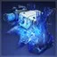 | 829 | 7 跳伤、52 裂隙 | 5546 | 6037 | 1 |
| 凄凉观察者 整个持续时间、裂隙之吟、包括碎裂伤害 | 829 | 7 跳伤、52 裂隙 | 4711 | 4770 | 2 | |
| 火药博弈 附着战斗人员身上 + 射击炸药 | 2329 | 187 子弹药、7 伤害 | 2954 | 4739 | 3 | |
| 坚不可摧 完全充能 | 5714 | — | 2484 | 4099 | 4 | |
| 火药博弈 半空引爆、大部分追踪子弹命中 | 3494 | 187 子弹药 | 2038 | 3249 | 5 | |
| 盾爆 骨灰余烬、包括点燃 | 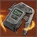 | 1715 | 163 次要、1553 点燃 | 1851 | 2665 | 6 |
| 速射神枪 平均伤害、包括点燃、骨灰余烬 | 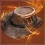 | 814 | 1553 点燃 | 1451 | 2130 | 7 |
| 火药博弈 附着战斗人员身上 | 2329 | 7 伤害 | 1016 | 1685 | 8 | |
| 旧神之子 整个持续时间、蔷薇束缚、包括 15% 易伤 | 91 | 116 终结 | 853 | 1405 | 9 | |
| 地狱火 平均伤害、领事投掷、最大射程 | 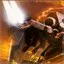 | 597 | 40 次要、1553 点燃 | 678 | 885 | 10 |
| 旧神之子 整个持续时间、包括 15% 易伤 | 89 | — | 471 | 778 | 11 | |
| 坚不可摧 未充能 | 991 | — | 431 | 713 | 12 | |
| 飞升 包括震颤、天赋信念 | 414 | 260 次要、228 震颤 | 510 | 615 | 13 | |
| 地狱火 平均伤害、骨灰余烬 | 497 | 1553 点燃 | 466 | 600 | 14 | |
| 地狱火 平均伤害 | 497 | 1553 点燃 | 411 | 551 | 15 | |
| 电弧之魂 爆发、增幅 | 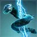 | 125 | — | 272 | 450 | 16 |
| 飞升 包括震颤 | 414 | 228 震颤 | 279 | 393 | 17 | |
| 勇士之鞭 | 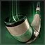 | 156 | 622 次要 | 338 | 382 | 18 |
| 离子哨兵 一发 | 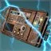 | 417 | — | 181 | 299 | 19 |
| 电弧之魂 爆发 | 125 | — | 163 | 270 | 20 |
无 200 属性实测
| 名字 | 图标 | 起手 | 后续 | 100 属性 | 200 属性 | 排行 |
|---|---|---|---|---|---|---|
| 缠结 回旋漩涡、无尽贪婪 x5 | 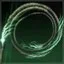 | 2391 | 41 伤害、200 跳伤 | 11579 | — | 1 |
| 缠结 回旋漩涡 | 870 | 15 伤害、73 跳伤 | 3971 | — | 2 | |
| 移民号微型导弹 | 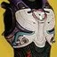 | 1243 | 3727 叛贼 | 3243 | — | 3 |
| 暮光军火 斧头重击、包括 15% 易伤 | 3396 | 2107 次要 | 2081 | — | 4 | |
| 刀剑风暴连击 全部 10 次命中 | 299 | 260 下限 | 1040 | — | 5 | |
| 电光充能 | 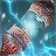 | 937 | 622 次要、1398/932 闪电过载 | 678 | — | 6 |
| 点燃 | 1553 | — | 675 | — | 7 | |
| 暮光军火 斧头轻击、包括 15% 易伤 | 1475 | — | 641 | — | 8 | |
| 缠结 羁客 | 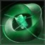 | 746 | 7 伤害、622 次要 | 598 | — | 9 |
| 缠结 | 870 | 15 伤害 | 385 | — | 10 | |
| 线虫 进化丝线 | 859 | — | 373 | — | 11 | |
| 碎裂 自动/人为碎冰 | 829 | 52 裂隙 | 360 | — | 12 | |
| 线虫 | 646 | — | 281 | — | 13 | |
| 烈日爆发 | 392 | 783 黎明副歌 | 170 | — | 14 | |
| 战斗和谐护肩 和谐弹药爆炸 | 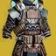 | 270 | — | 117 | — | 15 |
| 震颤 | 228 | — | 99 | — | 16 | |
| 不稳定 | 216 | — | 94 | — | 17 | |
| 动能冲击 | 532 | — | 79 | — | 18 | |
| 瓦解 单个投射物 | 90 | 103 强化 | 39 | — | 19 |